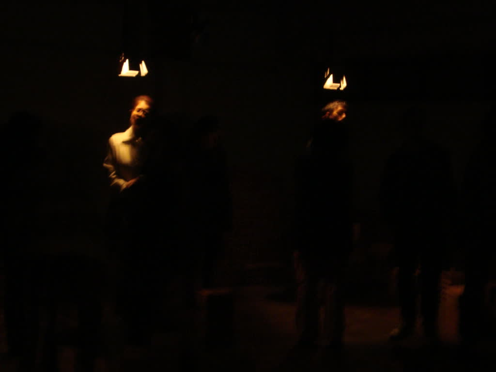
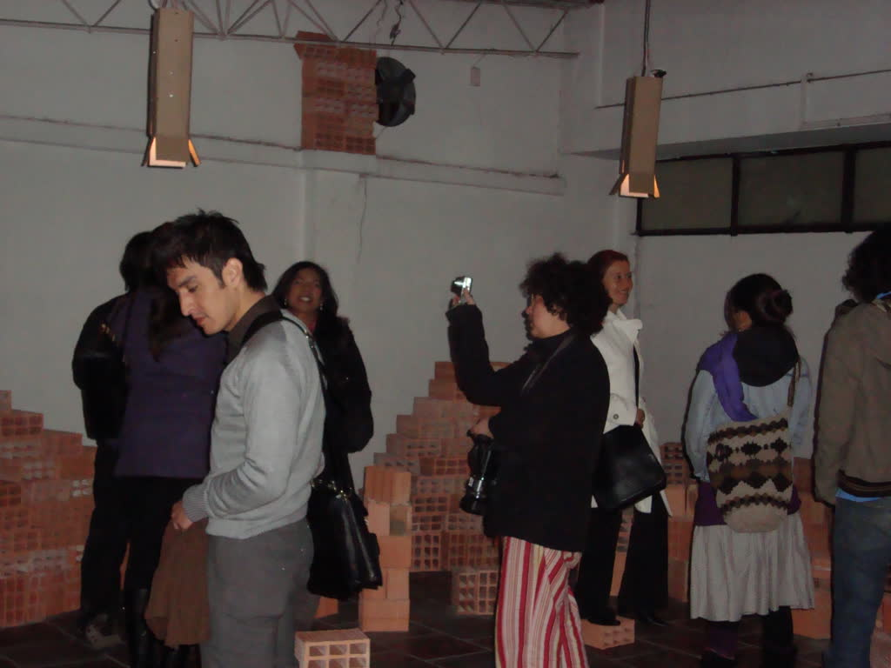
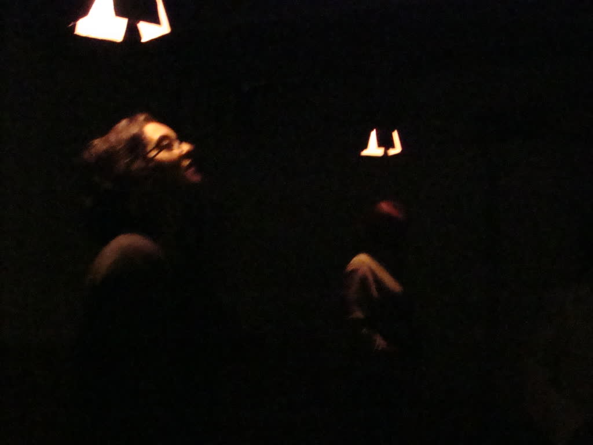
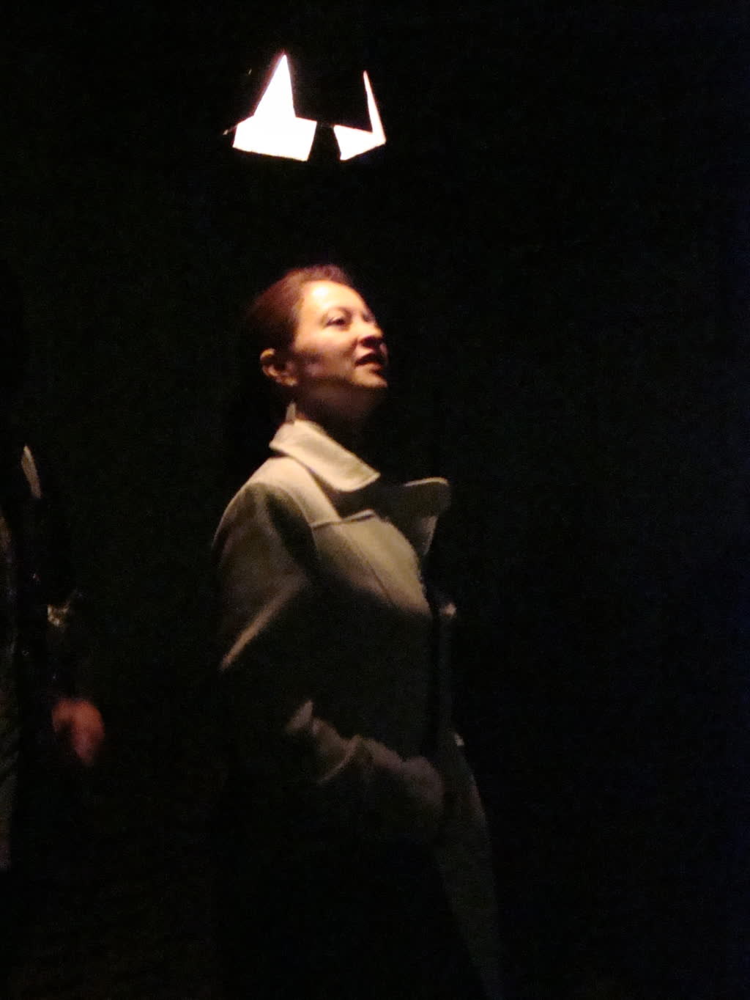
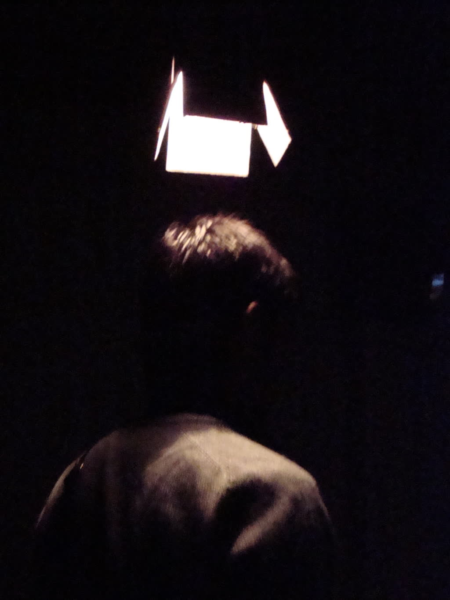
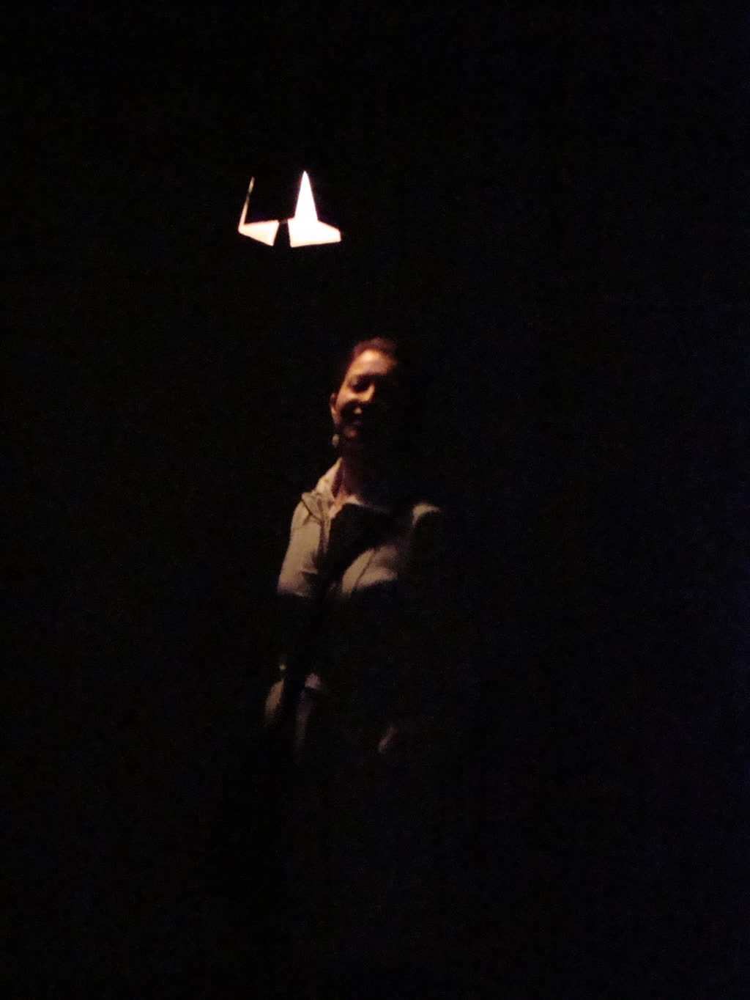
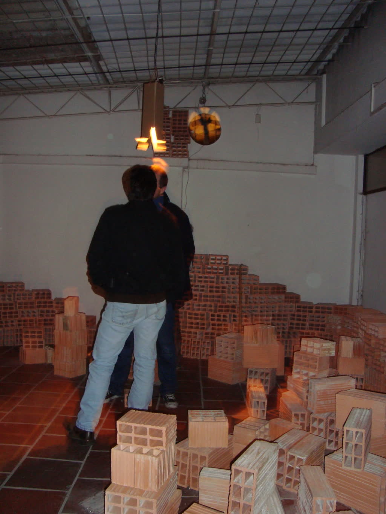

Fuente – Instalación interactiva
- Fecha
- 2007
- Rol
- Desarrollo de software y hardware
- Tecnologías
- Arduino, audio multicanal, tratamiento de señal en vivo
- Créditos
- Ricardo Alfonzo Dueñas

Desarrollo de software y hardware para instalación interactiva, tratamiento de señal en vivo.





